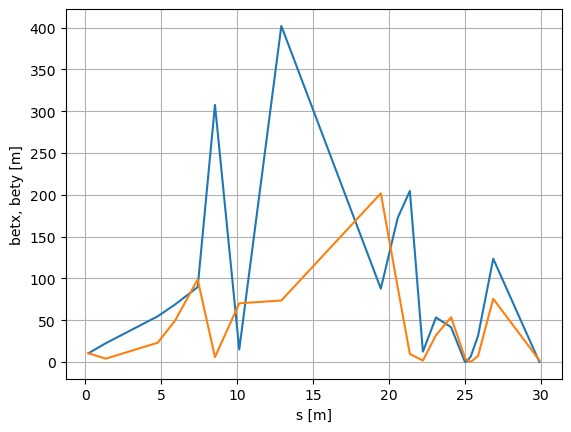

MAD-X Simulations¶
This section is based on the BL2_TDC ATF example.
Hint: See the List of predefined simulations in Sirepo for examples of identifiers for different beamlines.
[1]:
%run -i ../../../examples/prepare_flyer_env.py
from sirepo_bluesky.sirepo_bluesky import SirepoBluesky
from sirepo_bluesky.madx_flyer import MADXFlyer
from sirepo_bluesky.sirepo_ophyd import create_classes
connection = SirepoBluesky("http://localhost:8000")
data, schema = connection.auth("madx", "00000001")
classes, objects = create_classes(connection.data,
connection=connection,
extra_model_fields=["rpnVariables"])
globals().update(**objects)
madx_flyer = MADXFlyer(connection=connection,
root_dir="/tmp/sirepo-bluesky-data",
report="elementAnimation250-20")
def madx_plan(parameter=ihq1, value=2.0):
yield from bps.mv(parameter.value, value)
return (yield from bp.fly([madx_flyer]))
(uid,) = RE(madx_plan()) # noqa F821
hdr = db[uid]
tbl = hdr.table(stream_name="madx_flyer", fill=True)
print(tbl)
Transient Scan ID: 1 Time: 2022-10-27 19:10:36
Persistent Unique Scan ID: '97d96489-c56b-4969-b0a9-81bf49da4837'
New stream: 'madx_flyer'
time madx_flyer_NAME madx_flyer_S \
seq_num
1 2022-10-27 19:10:44.855964899 HPOP1 0.2
2 2022-10-27 19:10:44.856010675 HPOP2 1.34
3 2022-10-27 19:10:44.856031656 HPOP3 4.76
4 2022-10-27 19:10:44.856048346 HPOP4 5.9
5 2022-10-27 19:10:44.856065750 HPOP5 7.4
6 2022-10-27 19:10:44.856081486 HPOP6 8.54
7 2022-10-27 19:10:44.856097460 FP1 10.1405
8 2022-10-27 19:10:44.856121540 FP2 12.91425
9 2022-10-27 19:10:44.856136084 FP3 19.47205
10 2022-10-27 19:10:44.856224298 IP1 20.58655
11 2022-10-27 19:10:44.856245041 IP2 21.38655
12 2022-10-27 19:10:44.856261492 IP3 22.24655
13 2022-10-27 19:10:44.856274366 IP4 23.10655
14 2022-10-27 19:10:44.856294155 IP4 23.10655
15 2022-10-27 19:10:44.856309414 IP5 24.10655
16 2022-10-27 19:10:44.856322765 MARIP 25.01655
17 2022-10-27 19:10:44.856336355 IP6 25.14655
18 2022-10-27 19:10:44.856352568 IP7 25.40055
19 2022-10-27 19:10:44.856364965 IP8 25.88155
20 2022-10-27 19:10:44.856381178 IP9 26.88155
21 2022-10-27 19:10:44.856397390 IP85 29.92205
madx_flyer_BETX madx_flyer_ALFX madx_flyer_BETY madx_flyer_ALFY \
seq_num
1 10.408 -1.04 10.408 -1.04
2 22.36308646 -3.624538849 3.896222946 3.718548278
3 54.54905034 -5.786561702 22.97357858 -9.29672244
4 68.56397971 -6.507235987 49.11590862 -13.63514601
5 89.50807112 -7.455491624 98.58402476 -19.34359808
6 307.4856416 112.9905132 5.817318976 16.21508311
7 14.88197977 39.60718199 70.13138992 -56.39882003
8 401.9174447 160.5479232 73.48967579 -38.6139513
9 87.68881928 -43.43860941 201.6190476 61.8729287
10 172.3701365 -10.63650553 89.11175981 38.75805144
11 204.5244316 179.5447383 9.450509158 15.55187321
12 12.28385622 43.99081446 1.707651375 -6.548550206
13 53.19602988 -91.56310941 31.97752186 -28.64897362
14 53.19602988 -91.56310941 31.97752186 -28.64897362
15 41.51435231 44.78105726 53.51737606 40.7403245
16 0.03399234065 0.8017558982 5.067937875 12.50081636
17 0.6422942609 -5.481001439 2.342173629 8.466600915
18 6.544630471 -17.7565427 0.04322839397 0.5843645777
19 31.22276172 -30.86427138 7.170542443 -16.07768063
20 123.4932295 -61.40619642 75.51449284 -52.26626976
21 0.02788593595 0.5511794676 2.008613114 -43.46759074
madx_flyer_DX madx_flyer_DY
seq_num
1 0.0 0.0
2 0.0 0.0
3 0.0 0.0
4 0.0 0.0
5 0.0 0.0
6 0.0 0.0
7 -0.2984715573 0.0
8 -1.63656831 0.0
9 0.2556965419 0.0
10 0.0008094332053 0.0
11 0.00104212048 0.0
12 0.0004474769693 0.0
13 -0.0001471665411 0.0
14 -0.0001471665411 0.0
15 -0.0004955955883 0.0
16 -0.000460321507 0.0
17 -0.0004552823525 0.0
18 -0.0004454366199 0.0
19 -0.0003955160447 0.0
20 -0.0002147278867 0.0
21 1.261527697 0.0
/usr/share/miniconda3/envs/sirepo-bluesky-py3.9/lib/python3.9/site-packages/event_model/__init__.py:208: UserWarning: The document type 'bulk_events' has been deprecated in favor of 'event_page', whose structure is a transpose of 'bulk_events'.
warnings.warn(
Get the original data file¶
[2]:
import os
import tfs
for name, doc in hdr.documents():
if name == "resource":
resource_doc = doc
print(resource_doc)
filename = os.path.join(resource_doc["root"], resource_doc["resource_path"])
df = tfs.read(filename)
Resource
========
path_semantics : posix
resource_kwargs :
resource_path : 2022/10/27/a5970ba0-1161-45ac-b9a1-88c759939f1c.tfs
root : /tmp/sirepo-bluesky-data
run_start : 97d96489-c56b-4969-b0a9-81bf49da4837
spec : madx
uid : d1909000-e6aa-4f1d-9c76-e7b0e48c5e93
[3]:
df
[3]:
| NAME | S | BETX | ALFX | BETY | ALFY | DX | DY | |
|---|---|---|---|---|---|---|---|---|
| 0 | HPOP1 | 0.20000 | 10.408000 | -1.040000 | 10.408000 | -1.040000 | 0.000000 | 0.0 |
| 1 | HPOP2 | 1.34000 | 22.363086 | -3.624539 | 3.896223 | 3.718548 | 0.000000 | 0.0 |
| 2 | HPOP3 | 4.76000 | 54.549050 | -5.786562 | 22.973579 | -9.296722 | 0.000000 | 0.0 |
| 3 | HPOP4 | 5.90000 | 68.563980 | -6.507236 | 49.115909 | -13.635146 | 0.000000 | 0.0 |
| 4 | HPOP5 | 7.40000 | 89.508071 | -7.455492 | 98.584025 | -19.343598 | 0.000000 | 0.0 |
| 5 | HPOP6 | 8.54000 | 307.485642 | 112.990513 | 5.817319 | 16.215083 | 0.000000 | 0.0 |
| 6 | FP1 | 10.14050 | 14.881980 | 39.607182 | 70.131390 | -56.398820 | -0.298472 | 0.0 |
| 7 | FP2 | 12.91425 | 401.917445 | 160.547923 | 73.489676 | -38.613951 | -1.636568 | 0.0 |
| 8 | FP3 | 19.47205 | 87.688819 | -43.438609 | 201.619048 | 61.872929 | 0.255697 | 0.0 |
| 9 | IP1 | 20.58655 | 172.370137 | -10.636506 | 89.111760 | 38.758051 | 0.000809 | 0.0 |
| 10 | IP2 | 21.38655 | 204.524432 | 179.544738 | 9.450509 | 15.551873 | 0.001042 | 0.0 |
| 11 | IP3 | 22.24655 | 12.283856 | 43.990814 | 1.707651 | -6.548550 | 0.000447 | 0.0 |
| 12 | IP4 | 23.10655 | 53.196030 | -91.563109 | 31.977522 | -28.648974 | -0.000147 | 0.0 |
| 13 | IP4 | 23.10655 | 53.196030 | -91.563109 | 31.977522 | -28.648974 | -0.000147 | 0.0 |
| 14 | IP5 | 24.10655 | 41.514352 | 44.781057 | 53.517376 | 40.740324 | -0.000496 | 0.0 |
| 15 | MARIP | 25.01655 | 0.033992 | 0.801756 | 5.067938 | 12.500816 | -0.000460 | 0.0 |
| 16 | IP6 | 25.14655 | 0.642294 | -5.481001 | 2.342174 | 8.466601 | -0.000455 | 0.0 |
| 17 | IP7 | 25.40055 | 6.544630 | -17.756543 | 0.043228 | 0.584365 | -0.000445 | 0.0 |
| 18 | IP8 | 25.88155 | 31.222762 | -30.864271 | 7.170542 | -16.077681 | -0.000396 | 0.0 |
| 19 | IP9 | 26.88155 | 123.493229 | -61.406196 | 75.514493 | -52.266270 | -0.000215 | 0.0 |
| 20 | IP85 | 29.92205 | 0.027886 | 0.551179 | 2.008613 | -43.467591 | 1.261528 | 0.0 |
[4]:
import matplotlib.pyplot as plt
plt.figure()
plt.plot(df["S"], df["BETX"])
plt.plot(df["S"], df["BETY"])
plt.grid()
plt.xlabel("s [m]")
plt.ylabel("betx, bety [m]")
[4]:
Text(0, 0.5, 'betx, bety [m]')

Screenshot from Sirepo website¶